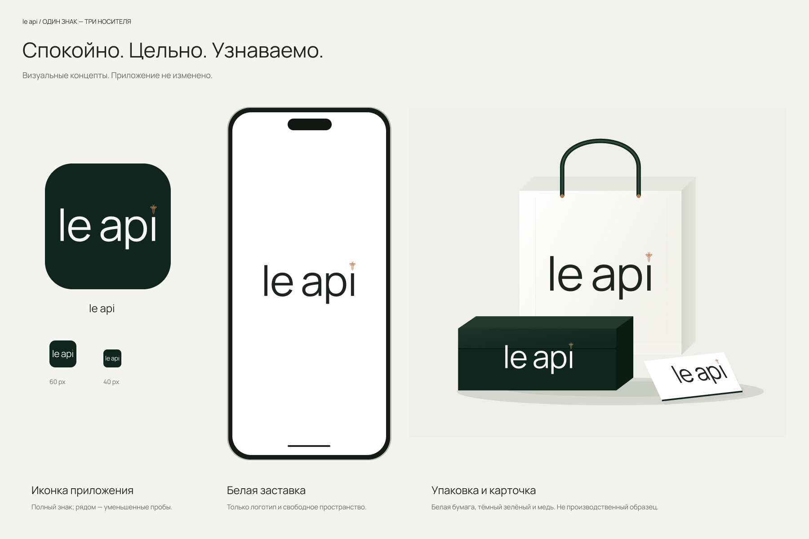
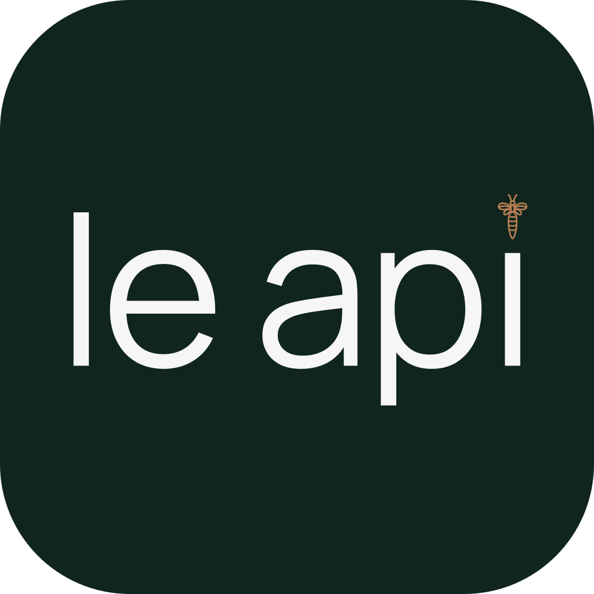
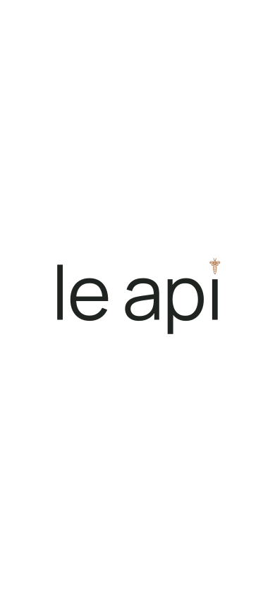
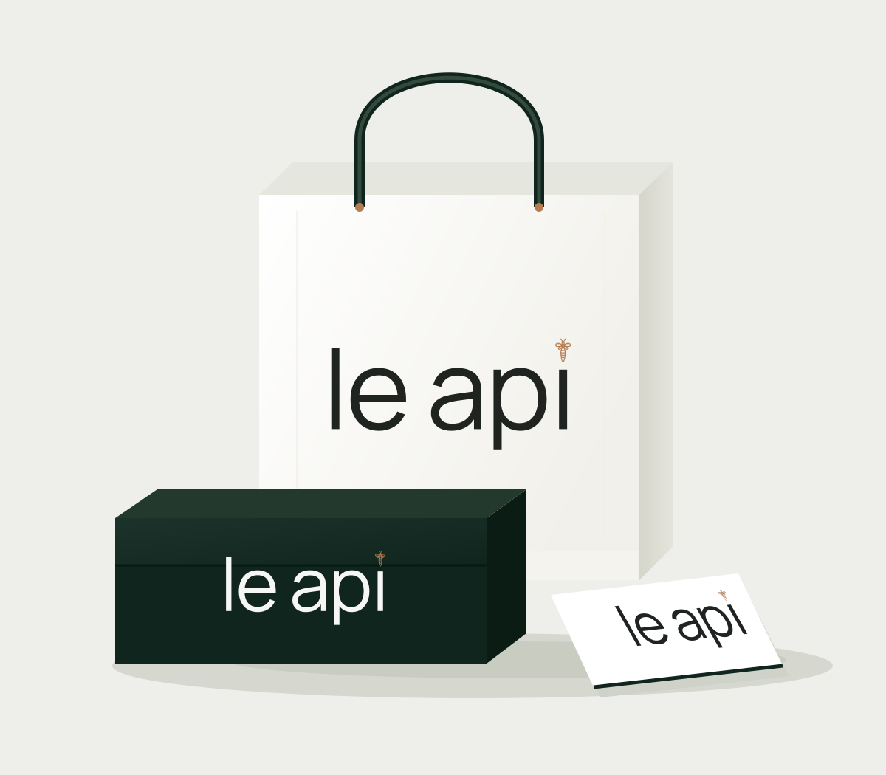

le api / ВИЗУАЛЬНЫЕ КОНЦЕПТЫ
Один знак.
Три носителя.
Выбранный зелёный #0F251D, медь #B57C52 и белая среда. Приложение не изменено.

Иконка приложения

Уменьшенные пробы показаны в реальном CSS-размере. Пчела сохраняет силуэт, но её внутренние линии в маленькой иконке становятся менее различимыми. Это визуальный концепт, не готовый экспорт для App Store.
Белая заставка

Логотип и свободное пространство. Рамка телефона — демонстрационный макет; заставка не устанавливалась в приложение.
Упаковка и карточка

Композиционная векторная проба: белая бумага, тёмный зелёный и медный акцент. Рисунок показывает сочетание носителей; реальные материалы, тиснение и цветопроба ещё не проверены.